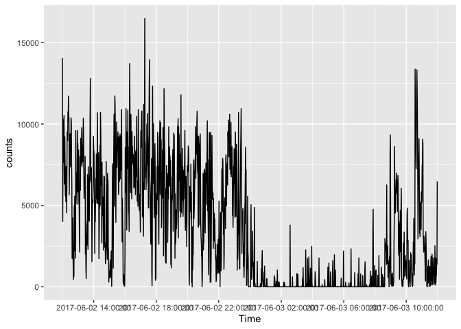
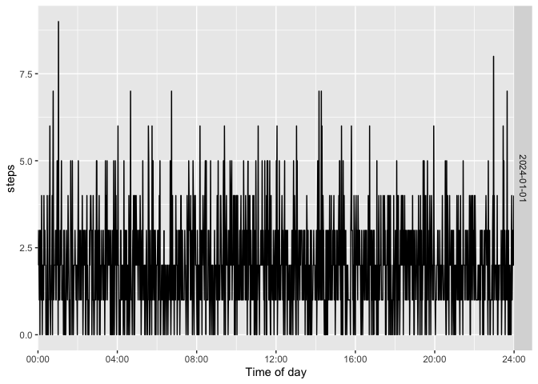
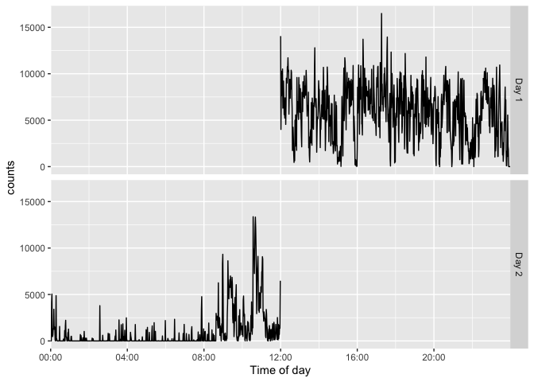
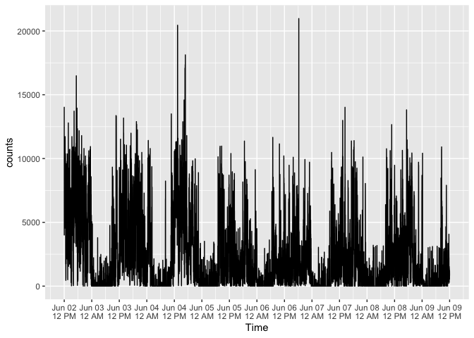
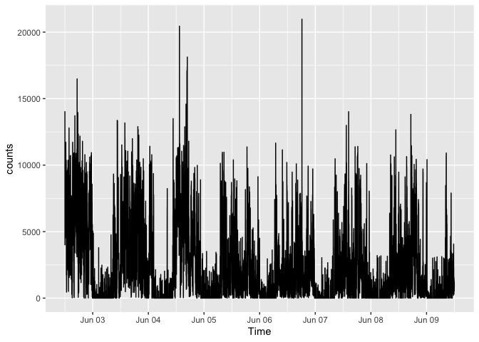
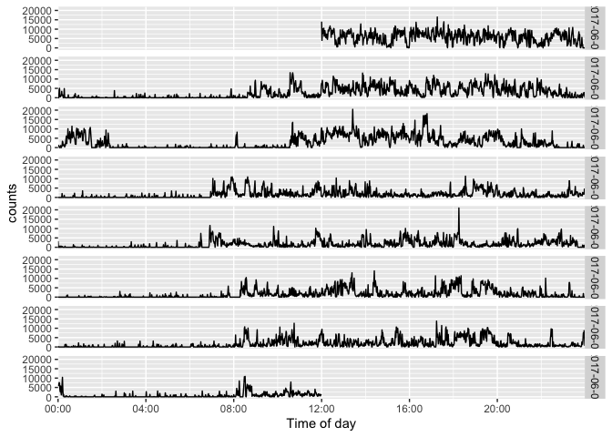

actiplot provides ggplot2 visualizations for minute-level activity data, including steps and activity counts. It works with the standardized timestamp conventions used throughout the activerse.
Example-data provenance
acti_minute_data is a processed minute-level recording drawn from the Figshare collection of upper-limb activity data from 20 myoelectric prosthesis users and 20 anatomically intact adults. Please cite the original data descriptor when using it: Chadwell A, Kenney L, Granat M, Thies S, Galpin A, and Head J (2019), Upper limb activity of twenty myoelectric prosthesis users and twenty healthy anatomically intact adults, Scientific Data 6, 199.
Core entry points:
-
acti_plot_time()for a complete activity time series -
acti_plot_day()for time-of-day-aligned daily rows -
acti_plot_heatmap()for a date-by-time activity heat map
Installation
You can install actiplot from GitHub with:
# install.packages("remotes")
remotes::install_github("jhuwit/actiplot")Quick start
activity <- acti_minute_data[seq_len(1440), ]
acti_plot_time(activity, counts, breaks = "4 hours")
acti_plot_day(activity, counts, breaks = "4 hours")
Daily facets can use a compact month-and-day label or baseline-relative day numbers: facet = "month-day" and facet = "day", respectively.
acti_plot_day(activity, counts, facet = "month-day")
acti_plot_day(activity, counts, facet = "day")
For a complete recording, x_axis = "12 hours" labels midnight and noon with both the date and a 12-hour clock. Use x_axis = "midnight" when a date-only label at midnight is preferred.
acti_plot_time(acti_minute_data, counts, x_axis = "12 hours")
acti_plot_time(acti_minute_data, counts, x_axis = "midnight")
acti_plot_day(acti_minute_data, counts, breaks = "4 hours")